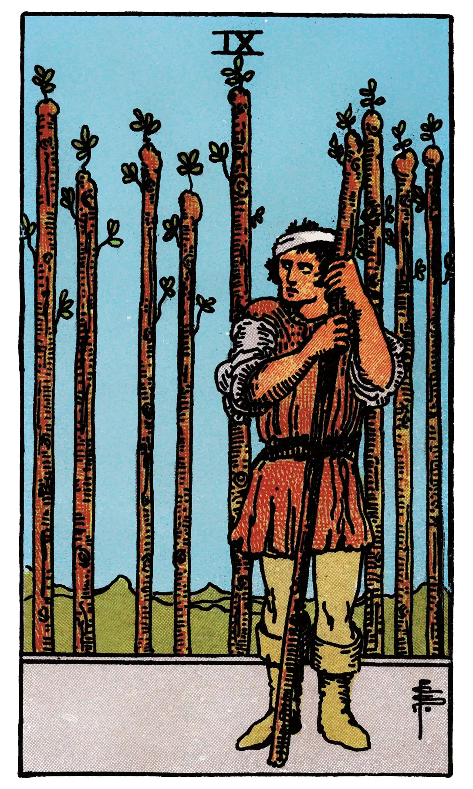

Nine of Wands

A.E.W.
Upright
The card signifies strength in opposition. If attacked, the person will meet an onslaught boldly; and his build shews that he may prove a formidable antagonist. With this main significance there are all its possible adjuncts – delay, suspension, adjournment.
Additionally
Generally speaking, a bad card.
Recurrence
2 - Receipt.
3 - Success.
4 - A good friend.
Reversed
Obstacles, adversity, calamity.
Additionally
[None given.]
Recurrence
2 - A small profit.
3 - Imprudence.
4 - Usury.
S.L.M.M.
Upright
Order, Discipline, Good Arrangement, Disposition
Reversed
Obstacles, Crosses, Delay, Displeasure.
Description
The figure leans upon his staff and has an expectant look, as if awaiting an enemy. Behind are eight other staves--erect, in orderly disposition, like a palisade.